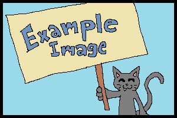
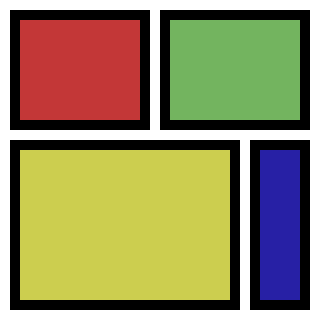

Doctype
Ett html-dokument börjar alltid med raden <!DOCTYPE html> som berättar för webbläsaren att
dokumentet kommer att innehålla HTML5 kod.
Teckenkod
Teckenkod är ett sätt för datorn att förstå hur olika slags tecken ska sparas och sedan kunna läsas för att kunna visas korrekt. Den vanligaste teckenkodningen idag kallas UTF-8 och innehåller stöd för alla tecken man någonsin skulle behöva.
Språk
Du kan specifisera språket genom att lägga till lang="en" i en tagg, vanligast är
html-taggen. Det hjälper t.ex. sökmotorer och skärmläsare att identifiera rätt språk på innehållet.
Validering
För att validera att du skrivit korrekt html så finns det html-valideringsverktyg som kan berätta om det finns fel i koden. Du kan t.ex. använda http://validator.w3.org.
Hur ett HTML-dokument är uppbyggt
Ett HTML-dokument är uppbyggt med något som kallas taggar. Taggar används för att skapa olika slags information
om HTML-dokumentet. Men innan man kan börja använda taggar så måste man inkludera <!DOCTYPE html>
för att berätta för webbläsaren att man vill använda HTML5. En tagg består ofta av en start-tagg och en slut-tagg
och mellan taggarna så inkluderar man sin data, t.ex. <title>Min titel</title>.
Det är rekommenderat att man även använder taggarna <head> för meta-information och <body>
för synligt innehåll för HTML-dokumentet.
Struktur
<html> berättar för webbläsaren att dokumentet är ett html-dokument.
<head> innerhåller allt metadata för html-dokumentet och är inte något som visas på sidan.
<title> är en metadata-tagg som placeras inuti <head> och definierar titeln på html-dokumentet.
<body> innehåller det synliga innehållet av html-dokumentet.
Visa exempel
<!DOCTYPE html>
<html>
<head>
<title>Min hemsida</title>
</head>
<body>
<h1>Min hemsida</h1>
</body>
</html>
Metainformation
<meta name="author" content="John Doe"> definierar en författare för webbsidan.
<meta name="description" content="Min hemsida"> definierar en beskrivning av webbsidan.
<meta name="generator" content="FrontPage 4.0"> definierar vilken mjukvara som genererat html-dokumentet.
<meta name="keywords" content="HTML,CSS,JavaScript"> definierar nyckelord relevanta för webbsidan.
<meta name="robots" content="index|noindex|follow|nofollow|..."> styr hur hemsidan ska bli indexerad av sökmotorer.
<meta http-equiv="content-type|refresh|..." content="text/html;charset=UTF-8|300|..."> är ett sätt att specifisera olika typer av HTTP headers, t.ex. content-type definierar teckenkodning, refresh definierar antalet sekunder tills sidan ska laddas om.
Visa exempel
<!DOCTYPE html>
<html>
<head>
<meta name="author" content="John Doe">
<meta name="description" content="Min hemsida">
<meta name="generator" content="FrontPage 4.0">
<meta name="keywords" content="HTML,CSS,JavaScript">
<meta name="robots" content="noindex">
<title>Min hemsida</title>
</head>
<body>
<h1>Min hemsida</h1>
</body>
</html>
Text
<blockquote> används för att citera texter.
<h1>,
<h2>,
<h3>,
<h4>,
<h5>,
<h6> används för att skapa rubriker, där
<h1> är den viktigaste rubriken och
<h6> är den minst viktiga rubriken.
<p> skapar paragrafer.
<pre> kommer att visa allt exakt som det skrivs i koden.
<span> används för att grupperna inline-element.
Hypertext
<a> skapar hyperlänkar till andra webbsidor, filer, platser, email-adresser, inom samma sida eller vilken annan tänkbar URL.
Det finns relativa och absoluta länkar. Du märker om en länk är relativ om den saknar http:// eller https:// i början av URL:en.
Visa exempel
<a href="index.html">Gå till startsida</a>
Gå till startsida
En absolut länk innehåller http:// eller https://.
Visa exempel
<a href="https://dsv.su.se">Gå till startsida</a>
Gå till DSV
En ankarlänk länkar till ett element som finns på samma sida som länken.
Visa exempel
<h2 id="kapitel-1">Kapitel 1</h2>
<a href="#kapitel-1">Gå till Kapitel 1</a>
Kapitel 1
Gå till Kapitel 1Man kan också skapa bild-länkar.
Visa exempel
<a href="../images/exampleImage.png">
<img src="../images/exampleImage.png" alt="En katt">
<a/>

Det går även att länka till olika protokoll (exempelvis ssh).
Visa exempel
<a href="ssh://triton.dsv.su.se/">Länk till Triton</a>
Länk till Triton
En mailto-länk länkar till en email-adress.
Visa exempel
<a href="mailto:amst8501@student.su.se?Subject=Hello%20World" target="_top">Skicka mail</a>
Skicka mail
Oordnad, ordnad och beskriven lista
En beskrivnings-lista kan skapas med elementen <dl>, <dt> och <dd>, och visas som en indenterad lista.
Visa exempel
<dl>
<dt>Kaffe</dt>
<dd>- en varm svart dryck</dd>
<dt>Bullar</dt>
<dd>- mjuk välsmakande ätbar deg</dd>
<dt>Kakor</dt>
<dd>- krispig välsmakande ätbar deg</dd>
</dl>
- Kaffe
- - en varm svart dryck
- Bullar
- - mjuk välsmakande ätbar deg
- Kakor
- - krispig välsmakande ätbar deg
En ordnad lista kan skapas med <ol> och <li> och visas som en numrerad lista.
Visa exempel
<ol>
<li>Kaffe</li>
<li>Bullar</li>
<li>Kakor</li>
</ol>
- Kaffe
- Bullar
- Kakor
En oordnad lista kan skapas med elementen <ul> och <li> och visas som en punkt lista.
Visa exempel
<ul>
<li>Kaffe</li>
<li>Bullar</li>
<li>Kakor</li>
</ul>
- Kaffe
- Bullar
- Kakor
Tabell
<table> skapar en tabell.
<caption> definierar en beskrivning av tabellen.
<td> skapar en ny datacell.
<th> skapar ett nytt tabellhuvud.
<tr> skapar en ny rad i tabellen.
Visa exempel
<table>
<caption>Adressbok</caption>
<tr>
<th>Förnamn</th>
<th>Efternamn</th>
<th>Ålder</th>
</tr>
<tr>
<td>John</td>
<td>Doe</td>
<td>35</td>
</tr>
<tr>
<td>Jane</td>
<td>Doe</td>
<td>33</td>
</tr>
</table>
| Förnamn | Efternamn | Ålder |
|---|---|---|
| John | Doe | 35 |
| Jane | Doe | 33 |
Bild
<img> definierar och visar bilder.
Visa exempel
<img src="../images/exampleImage.png" alt="exampleImage.png">
Bildkartor
<map> används tillsammans med <area> för att skapa bilder med klickbara länk-områden.
Visa exempel
<map name="bildkarta">
<area
shape="rect"
coords="10,10,150,130"
href="index.html"
target="_blank"
alt="Röd" />
<area
shape="rect"
coords="160,10,310,130"
href="index.html"
target="_blank"
alt="Grön" />
<area
shape="rect"
coords="10,310,240,140"
href="index.html"
target="_blank"
alt="Gul" />
<area
shape="rect"
coords="250,140,310,310"
href="index.html"
target="_blank"
alt="Blå" />
</map>
<img
usemap="#bildkarta"
src="../images/colors.gif"
alt="Min bildkarta" />
